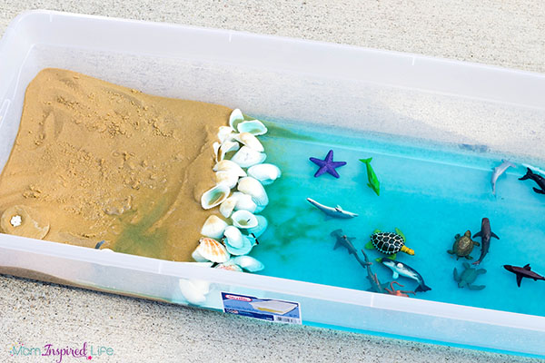

When I started working with kids I observed that the important physical sense most of the children enjoyed was sensory.
So I gradually started introducing such projects with the students in my class. The children not only enjoyed playing
with the finished product, but also enjoyed making them together with teachers/family and friends. By doing so, I saw
lots of milestone developments with the children.

Beach Day at Home!!
On very hot days, playing in water and sand is so much fun. This sand and water sensory was hit sensory project
at both home and school. Supplies needed for this project is large bin, play sand, large shells can also be painted
on if children are intrested, sea animal toys and water with blue food coloring.